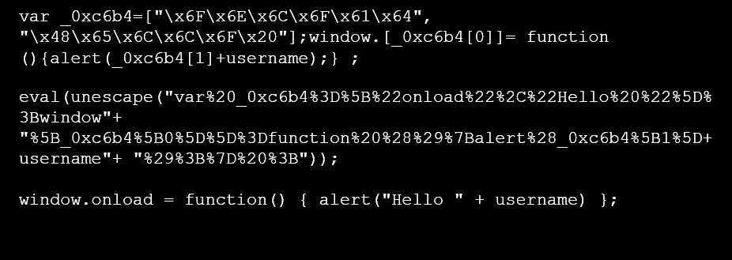
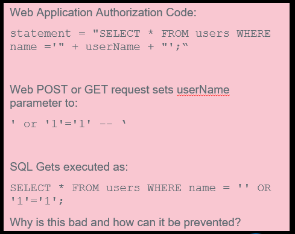
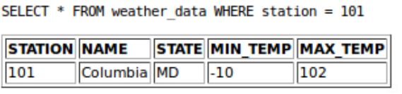
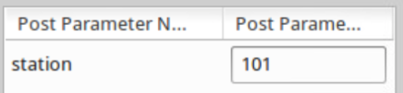
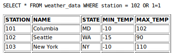

CS373 Weekly Write-Up 7
This week the lectures focused on Web Security and the various threats and methods associated with it, with the goal of helping us understand the nature of protecting a system from web-based incursions.
The first lecture began with a reminder that while many of the specific exploits we would be using are outdated and would not function outside of our VMs, the more general methods and ideas were still widely applicable and widely illegal. With many associated cyber crimes ranging from misdemeanor to felony, it would be smart of us to use especially build tools for practicing instead of trying to breach random websites, assuming we are more interested in going deeper into the field of computer science than this primer would delve.
The World Wide Web as a delivery mechanism:
The web has become the most bountiful source or malware, with around 95% of malware delivered through the web in some fashion, with a large and growing number of threats that exist entirely within the confines of the web browser, allowing them to evade AV services. The trouble doesn’t stop there however, due to many browsers having different inner workings and as such different vulnerabilities, most web browsers share the same 3rd party plug-ins. By targeting these plugins, the attacker can avoid having to work out different exploits for each browser or simply having to skip specific kinds of browsers.
The biggest threat to a system from the web however isn't vulnerabilities in a program, it’s the insecurity of the users. Called “User-Level-Attacks”, the idea is simply that it is easier to trick the user than to trick a program. By taking advantage of impatience, laziness, click-addictive behavior, and other forms of social-engineering, the attacker can get the user to intentionally download malware, run executables, follow dangerous links, etc.
User level Attacks:
Phishing:
One of these social engineering tactics is called phishing, which is simply tricking the user into going to a specific malicious url where their personal information can become compromised. This can take the fairly well known form of email phishing, where an initially legitimate looking email requests you follow a link, usually to “verify” some private information which is then simply stolen.
SEO Poisoning:
Seo Poisoning is where a malware site takes advantage of the search engine instead of social media or email to trick the user. The attacker will create a very authentic looking copy-cat website and will then seed it with the most popular search terms to get it to the front page of the search results for said term. These search terms can range wildly from Celebrities, Pop Culture, World Events, Educational/Professional, to the always popular Fake AV/AM. This site then redirects any fooled users to malicious content.
Fake Updates/Fake AV:
Fake Updates/Fake AV are pop-ups that are dressed up to look like alert messages from your anti-virus, operating system, or a standard plug-in. They can deliver malware but more often than not they are designed to get you to enter in your banking information so they can convince you to purchase a fix to the “problem”, or they can just steal your information directly.
Malvertising:
Malvertising is another popular method for attackers. The attackers pose as legitimate ad space purchasers, and then over time begin seeding the ads with links to their malware sites (see phishing and fake updates/AV). By appearing legitimate at first and using established ad networks, the attackers can put their malware links on actual legitimate, highly trusted websites. Thanks to Big Data, the attackers can even take advantage of the social engineering of targeted advertisements, allowing them to target their malware at specific susceptible demographics in the same way advertisers do.
Waterhole Attacks:
Similar to the last part of malvertising, a waterhole attack is “I can't reach people X, Y, Z, but i know they use service A, so if I infect service A I might be able to infect X, Y, Z, when they try and use the service”.
Securing the applications:
Unfortunately, securing the applications from user-level-attacks is difficult, as it usually isn't an inherent flaw in the software that is causing the issue. Users have been unintentionally conditioned by legitimate websites/applications to become susceptible to these attacks. The best we can do it implement URL/Domain Reputation services, safe url shorteners, educate content providers about how they can stop training their users how to be vulnerable, and (although the hardest to implement) end user education.
Browser Level Attacks:
As mentioned at the beginning, browser level attacks rely on exploits within the browser or one of its built in 3rd party applications.
CONTENT/SCRIPT OBFUSCATION:
One of the methods for filtering malicious-looking page content was through advanced text processing, unfortunately this is slowed by content/script obfuscation where any readable text is made hard to read/meaningless looking. This can be done by renaming script variables, removing whitespace, making a massive block of text, self-generating code, a heavy use of eval statement with character codes, string manipulation, and even encryption.
Example of OBFUSCATION (from lecture):

Man In the middle
MITM attacks have been discussed in previous weeks, and the concept is nearly identical for browsers to what we saw with firewalls. Browser based MITM attacks intercepts and modify web traffic, as HTTP and HTTPS are fairly easy to intercept.
SQL Injection:
SQL injection is fairly simple, Search-Query Language is a very straightforward language that is a bit execution happy, and if the website designers aren’t scrubbing their inputs a SQL injection attack is as simple as pasting the script into any available text box, like a username/password box.
Example of SQL injection (from lecture):

Lab 1: Attack the Goat!
This lab focused on us using the insecure web application WebGoat to practice attacking a system. One of the practice techniques is a Cross-Site Scripting (XSS) attack, where we directly inject javascript code into an insecure text box to trigger an alert with the text we want. The attack can even be stored by hiding it in saved fields so that when the information is called up the text is triggered.
For the XSS attack we are given a user information page, and all we have to do is empty a field (in this case the street) and enter in the javascript for the alert.

Javascript:
And when the profile is opened the javascript is run:

The 2nd part was very easy and actually identical to something discussed in the lecture, to get past the Improper Error Handling section, all that has to be done is to change the password variable name to something else, this will cause the authentication to “fail” in the wat we want, logging in instead of throwing the proper error.
The last part is to use a SQL injection attack, and is also just like what we saw in lecture. All we need to do is change the SQL call so that it displays all weather data. We can see the exact command is:

Using Tamper we can find the station variable:

All we need to do is use the OR sql keyword to let it display all weather data, so we change the station variable from “101” to “101 OR 1=1” and get

In the 2nd set of lecture videos we covered a set of tools that were useful for web malware security defence or investigation.
WEB MALWARE - TOOLBOX:
Alexa - Domain-based tool that is useful for determining general site popularity and prevalence by collecting data via end-user toolbars.
Archive.org - Useful for determining site changes over time (but not good for short lived malware content).
IPVoid - Check an IP against a large list (35+) of IP blacklists.
CheckShortURL - Expands shortened URL’s
Site Dossier - General Site Information (IP, Parent, DNS Servers, Inbound Links)
Webutation - URL Reputation Clearinghouse
Web Inspector - Online web scanning tool that provides list of recently detected malicious sites.
Virus Total - Another online web scanning tool along the same lines.
Linux JWhois - Domain registration data client
Linux Dig DNS resolver utility
IOC (Indicators of Compromise): Provides contextual data around different malicious objects (URL/Domain, IP/ASN, File Hash, Actor)
WEB MALWARE - Research Tools:
PhantomJS - Headless, scriptable browser (Executes all scripts and fully renders page)
Burp Suite - Graphical deconstruction tool (Intercept and modify traffic to/from the remote web site and logs resource requests)
Web Scarab - Graphical deconstruction tool (Intercept/modify requests)
JSUnpack - Script de-obfuscator (see the section on SCRIPT OBFUSCATION above)
Firebug - Multi-feature Firefox plugin (Inspect HTML elements, Explore page script, Modify the, DOM, Set breakpoints)
These purpose of these tools was covered briefly, as we would not be going in depth with them in this class.
URL Classification:
URL Classification is the process of identifying malicious websites, and the final topic of this week. URL classification is done either through Content-Based classification, Host/Lexical based classification, or Graph based classification.
Content-Based classification:
Content based classification comes in 4 types, manual (using the tools discussed previously to classify the url), static (using automated methods that look at page content for malicious features without executing), low-interaction (use more of the tools to automatically render and execute content), and high-interaction (using a sandbox or virtual environment to fully render and execute content, allowing the “host” to become infected in a controlled environment).
Host/Lexical based classification:
Lexical based classification involves extracting features from the URL string such as the domain, path, CGI, and others. Host based classification involves looking at IP Addresses, Domain Registration, DNS Data, and SSL Server Certificates to identify anything suspicious such as an IP address for a known malicious content provider.
Graph Based Classification:
Graph based classification involves using new graph database engines to store very large data sets and classify URL’s by “guilt by association”, identifying malicious sites through their connection to other malicious sites.